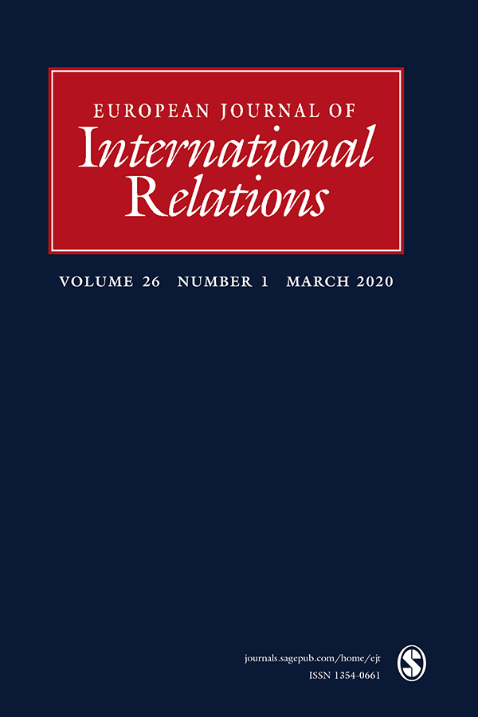

收录于合集

编者按
随着全球环境问题的日益严峻，以及美国退出全球气候变化的《巴黎协定》，作为围绕可持续发展目标所制定的全球发展议程的核心——国际政治中的环境议题再次聚焦公众视野，关于大国是否应当承担环境责任的问题也再度引起学界争论。本文通过总结国际关系各理论学派关于大国责任缺失的观点和梳理全球环境责任的演变与实践，为读者们展示了环境政治中大国责任的另一观察视角。
作品简介
【作者】 Steven Bernstein，多伦多大学蒙克全球事务与公共政策学院(Munk School of Global Affairs and Public Policy)政治学教授和环境治理实验室联合主任,研究主要涉及全球治理和制度、全球环境政治等领域。
【编译】 冯毓婧（国政学人编译员，国际关系学院国际政治系）
【校对】 徐一凡
【审核】 李博轩
【排版】 王国伟
【来源】 Bernstein, Steven. “The Absence of Great Power Responsibility in Global Environmental Politics.” European Journal of International Relations , vol. 26, no. 1, Mar. 2020, pp. 8–32.

期刊简介

European Journal of International Relations，《欧洲国际关系杂志》（EJIR）是欧洲政治研究联盟国际关系常设小组（the Standing Group on International Relations of the European Consortium for Political Research, SGIR）的同行评审旗舰期刊, 由SGIR和欧洲国际研究协会组成的联合委员会共同管理。2019年该期刊的影响因子为2.756。
全球环境政治中大国责任的缺失
The absence of great power responsibility in global environmental politics
Steven Bernstein
内容提要
大国常面临承担解决全球事务中重大问题的特殊责任的要求，并且经常因此获得特殊权利。这些领域包括和平与安全、全球经济管理、发展以及对人权的严重侵犯等。尽管全球环境问题，特别是气候变化和新的可持续发展目标（Sustainable Development Goals, SDGs）所涵盖的问题的重要性有所提高，但要求或承认巨大环境责任的规范或制度却明显缺失。这一缺失与包括英国学派、现实主义、自由主义和建构主义在内的主流国际关系理论流派的预期相悖，令人困惑。本文根据这几个理论流派关于大国责任的争论总结出环境问题领域中大国责任未能确立的三个原因：系统性“大国”和环境性“大国”间缺乏一致性；环境行动与维持国际秩序之间的经验性联系弱；特殊权利的缺乏。
本文结构如下：第一部分将讨论为什么大国应当承担确保环境完整性的特殊责任，以及迄今为止大国不负责和自私自利的行为可能导致的后果。第二部分回顾了关于大国责任的理论争论，并从各种理论传统中找出关于大国地位与特殊权利和责任之间的联系假设。第三部分解释了为什么这些联系在环境领域未能得到发展。第四部分审视了全球环境责任的演变与实践。最后，结论部分讨论了这些观点对大国责任前景的影响，从而能更广泛地解决具有系统重要性的新问题。本文还认为未来需要在国际关系理论和实践中重新思考责任与全球政治。
文章导读
01
为什么大国要对环境负责？
究竟应该把哪些国家划分为大国？大国责任应该采取何种形式？是否应该赋予大国以特殊权利？这些问题可能存在分歧。 然而，无论如何，人们都希望大国承担 有区别的 责任，以确保地球的环境完整 性，这 有两个 显而易见的原因：
首先，大国 可以 解决或减轻最严重的全球环境问题，因为它们的能力更强。 像美国、德国和中国这样的大国已经分配了财政和技术资源，以促进环境领域的全球集体行动。不承担责任不仅会产生集体行动问题，而且很容易破坏集体努力(Falkner，2005; Keohane and Victor，2016)。面对环境领域责任相对缺乏的境况，即使是那些批评大国管理(great power management, GPM )或基于道德方面批评将责任分配给可能造成负面影响的行为体的人，也支持大国责任。
其次，大国 的 特殊环境责任 应该是 支持、鼓励并使国际秩序合法化 。 这种秩序实际上反映了对环境保护和可持续性的承诺(commitment）。研究表明，虽然环境合作不需要霸权国家，但大国的领导和资源(无论是个体还是集体)有助于通过劝诱、施压、说服或提供补贴的方式促使他国也采取政策和实现目标(Falkner，2005;Young，2011)。相反，缺乏维持特定秩序的大国责任，即使其他国家愿意领导，也会使行动变得困难。
大国究竟需要承担怎样特殊的环境责任，或者如何使这种责任不为狭隘利益服务，而为更广泛的共同利益或多元利益服务，这些都很难简要地说清楚。在评估大国责任存在与否时，本文遵循英国学派的指引，寻找一些公开承认的证据以证明大国有义务为了整个国际社会的利益，在促进和追求核心环境规范方面承担特殊或有差别的责任，并将这一责任制度化(Cui and Buzan， 2016:174;Loke，2016:851)。环境领域所要求的不同责任通常采取承诺的形式，即带头在更大程度上采取行动(例如更大幅度地削减有害排放)，或提供更多的资源(例如技术、融资或援助)。还有人要求承认对目前和历史上造成的环境问题负有责任。然而，这种责任的承担形式以及它可能适用的对象，正是阻碍大国对环境承担责任的问题之一。
02
国际关系理论中的大国与大国责任
制度自由主义者认为，大国的利益与国际秩序和稳定所带来的好处是一致的，因此承担特殊责任在物质上是必要的，同时也为这种秩序提供了合法性。
现实主义者，尤其是新现实主义者认为，特殊责任源于国家的物质优势，尤其是军事能力。现实主义者通常会以各国在本地区之外投射政治或军事力量的能力作为衡量大国的标准。即便如此，摩根索(Morgenthau)时代以来的现实主义者普遍认同自由主义者的观点，即大国在处理重要全球问题方面可以发挥特殊作用。
建构主义者将大国责任作为一种社会关系的理念。其中贝弗利·洛克将大国视为“社会建构和协商的概念”，并将争论和协商(contestation and negotiation)作为责任的基础（Loke，2016:848)，这与英国学派中更稳定和系统的大国管理之间有所冲突。建构主义者还认为，社会领域通过物质和观念两方面的因素决定了大国责任的授予(Bukavansky et al., 2012: 73)。环境领域对责任要求的规范存在着争议。责任不仅包括保护其他国家的外部性（externality）和全球利益，而且对于那些在发展过程中受益于自身发展中产生的工业污染的国家来说，都具有一种道德上的义务。
在国际秩序与大国责任之间的联系问题上，比起建构主义者，英国学派学者的观点更接近现实主义者和自由主义者。英国学派学者们认为，大国的责任源于他们维护国际社会秩序和规范的义务，因为他们对特殊的权利和特权的享有违反了主权国家制度基础上的国家形式平等。克拉克（Clark，2011: 4）将大国定义为具有领导的能力或者资源的国家，尽管责任首先来自于维护国际秩序所必需的大国地位。布尔和克拉克(Bull and Clark)认识到，要使大国地位具有说服力，关于特殊地位的论据不应仅仅依赖于自身利益，而且还应根据其能力引入一种道德责任或义务。其他国家承认大国将特殊权利和权威合法化的要求，反过来大国将因此承担额外负担的义务。现实主义者也在很大程度上支持布尔的观点，即大国乃是以其系统性，而非在某一特定议题上的重要性确定的。大国不仅在秩序上有利益，而且在避免地方或区域冲突或贫穷，诸如难民或恐怖主义的消极外溢方面也存在利益，因此大国应当对冲突管理或其他系统性问题负责。
综合 国际关系理论 的争论，本文总结了 大国 承担 全球环境责任 原因的三个理论假设 :系统 大国 和环境 大国的一致性 ( 现实主义、 英国学派 、建构主义 ) ； 环境完整性与维护国际秩序之间的明确联系 ( 现实主义、 英国学派 、自由主义 ) ； 以及将特别责任的分配与特别权利 联系起来 ( 英国学派 、建构主义 ) 。
03
大国为何不承担环境责任？
尽管在其他问题领域，以上三种关于大国对物质和规范方面的全球责任承担的原因假设令人信服，但在环境问题方面，上述三种假设都不成立。
1 . 系统性“大国”与环境“大国”间缺乏一致性
大多数大国的定义在环境领域都不适用。尽管一些具有系统重要性的国家(尤其是美国)显然可以被视为“环境”大国，但其他同样对环境管理至关重要的国家则不然。依据建构主义者的观点，“大国”定义可能适用于不同的国家或不同的环境问题，这取决于物质和观念结构如何构成相关的权力(Bukovansky, 2012)。
然而，这种观点没有注意到大国责任在国际社会中的制度化。 在环境方面，特定领域 的大国 和具有系统重要性的大国之间的 龃龉 是一把双刃剑 。一方面，它表明，尽管中等强国和事业型国家（middle and entrepreneurial leaders）在特定领域上做出了种种努力(比如，中东国家、北欧五国或法国这样的中等国家在气候变化问题上做出了贡献)，但他们不愿承担特殊责任，也得不到特殊权利。另一方面，现有的特殊责任及其制定方式总是与大国无关，这意味着许多较小国和区域性强国仍有机会发挥领导作用(或破坏作用)。事实上，许多全球环境问题的最重要参与者都是特定领域大国，而且他们也显然需要参与解决这些问题。 然而，责任的 确立实际上 并不与 这些国家 在维护国际秩序或拥有特殊权利 的 重要性 呈线性相关 。
在实践中，一个 应承担责任的 “ 环境 ” 大国是按照处理 历史和当代环境危害的贡献与处理危害能力结合 而确定的 。然而，这些并不是 现有研究中 将大国与特殊责任联系起来的标准 。 (Falkner，2018:13)。很少有人提到“环境大国”的原因是，“环境”大国的地位主要取决于具体情况，且与罪责（culpability）的逻辑和创造义务的能力联系在一起，与大国地位的联系并不密切。因此，关于责任的规范性和推论性的论点与大国的范畴并不相符。
2 . 国际秩序与环境完整性的经验性联系弱
在英国学派、自由主义和现实主义对大国责任的描述中，第二个重要论点是责任承担和国际秩序给大国带来了好处。然而，在国际社会中，环境管理与国际秩序之间的联系仍然很弱。简而言之， 大国 未能履行环境承诺或未能在紧迫的环境问题上发挥带头作用，似乎对 广而言之 的国际秩序或合法性没有什么影响。
大国不负责任的环境行为无法对国际秩序构成威胁，这意味着 必须更多地依赖 与 大国责任 相应 的规范 ，以创造大国 强烈的责任或义务感，而不是单纯地 从大国 自身利益 出发 。 同时，这一论点并不意味着不去巩固处理环境问题的一般或差别化责任（differential responsibility）的规范，尽管差别化责任的概念并不符合大国的利益，也没有被视为大国领导权或地位或国际秩序合法性的核心。并且，责任的概念很大程度上是从南北分歧（North–South conflict）演变而来的，其提出是对主要经济大国的要求，而不是因为世界秩序的利益或大国地位的合法性。换句话说，即使接受福克纳和布赞(Falkner and Buzan, 2019)关于环境责任现在是一个首要制度（primary institutions）的观点，也没有证据表明，大国如果不能承担环境责任，其合法性、国际承认或在国际体系中的地位将会受到挑战。
3 . 特殊权利的缺乏
第三个 原因 是环境 问题 未能 给大国带来 任何特殊权利或特权， 而且大国似乎也并不需要这些权利 。 在实践中，权利主张都是由小国和发展中国家，而不是大国提出的。例如，他们长期以来一直主张“发展权”，并试图将其纳入各种环境协定，包括成功地将其纳入通过《巴黎协定》的决定。相比之下，大国没有要求特殊权利的正当理由，也没有任何类似保护的责任（Responsibility to Protect，R2P）这样为大国创造责任的概念的环境人权学说。从理论上讲，如果各国政府开始将气候变化视为紧急事件，这种情况在未来可能会发生改变。可以想象，在这种情况下，大国会主张特殊权利，来为地理工程（geo- engineering）的部署决策、进行治理技术、或对整个体系进行总体管理。然而，关于地理工程治理的研究已经反映出，大国对特殊权利的抵制，即使在气候紧急情况下也如此，因为他们将大国特殊权利和威权主义（authoritarianism）联系起来。
综上所述，尽管环境问题具有系统性的重要性，但大国环境责任缺乏条件。下一节将详细阐述全球环境责任是如何演变的。
04
全球环境责任分配的演变与实践
1. 环境责任分配的演变
国际环境规范将国家确定为责任的承担者，并且像国际法的其他领域一样，将责任与对外主权（external sovereignty）结合起来。责任被界定为一种对内的“国家责任”（state responsibility），国家对国内污染直接造成的外部环境损害承担有限责任。然而，在实践中，国际环境法很少被实施来强制执行责任。 因此，即使责任 被认可， 在实践中也与问责机制联系不大，除非在具体的法律文书中正式确立这些机制。 同样，共同但有区别的责任（common but differentiated responsibility，CBDR）规范是与环境特别责任最直接相关的标准，以互相间义务的形式适用于各个国家。1972年的《联合国人类环境会议宣言》（Stockholm Declaration of the Human Environment）和1992年的《里约宣言》（Rio Declaration）明确了全人类共同承担保护环境的责任。这两项宣言使得除国家以外的任何追责的可能性变得无效，从而使国家责任原则在实践中处于首要地位。
由于这些围绕国家责任的初步构想，随后的辩论很少对责任对象提出质疑，而是质疑国家在追求环境目标过程中相互责任的形式、类型、正当性和分配方式。 其后， 一个值得注意的转变是 ，辩论的关注 从 “共同责任”【如 保护和分享被指定为人类 “ 共同遗产 ”（ 即任何国家管辖范围以外的区域，例如深海海底、外层海床和外层海床) 】转 变为 “差别化责任” 。 但正如前面讨论的那样，这些论点来自南北关系中的讨价还价，而不是对大国责任的关注。因此，尽管在谈判和讨论中开始出现了差别化责任的观点，彼时任何多边气候变化协定都没有任何认可这种观点的措辞。
总之，环境领域责任 的确定 几乎完全取决于目前对某一具体问题的贡献和处理这一问题的能力。 虽然从理论上讲，根据能力分配责任的想法与特定领域大国的建构主义概念重叠，但更广泛的管理或秩序与大国责任从未被认为有关联，而且对于诸如发达国家和发展中国家的划分虽然正在消失，但仍然具有粘性，并与关于历史责任的持续争论联系在一起。与此同时，符合历史罪责（historical culpability）原则的责任没有牵引力，而符合金融原则或符合法律责任原则的历史责任之间的联系受到强烈抵制。气候谈判者能否成功地将损失和损害与经济赔偿联系起来取决于其能否避免明确承认历史责任。而随着新兴经济体和新兴大国逐渐获得更多实力，人们越来越多地期望，责任的分配能同此一起演变。
2. 环境责任实践情况：从对外责任到对内责任？
有学者希望将责任作为一项保护个人和弱势群体的道德原则，这将意味着国际社会对责任的主流理解发生根本性转变。如孔卡（Conca）记录了几次联合国体系内将环境、发展和人权议程联系起来的尝试，但也指出了这一做法存在重大体制障碍(Conca，2015)。他从道义和务实的角度提出，可以调整现有的联合国人权机制，以支持在这些法律、规范和制度发展基础之上建立“保护环境的责任”（environmental responsibility to protect）。 虽然孔卡的 希望在 环境 问题领域给予 大国特殊权利和义务 ， 但全球环境和可持续治理 领域 似乎朝着相反的方向发展 ： 维护国际秩序的责任 被 直接分配给各国，这种责任 从而被淡化和分散了 。 这些趋势意味着责任的分配更加横向化，不仅不区分国家，而且也不区分伙伴关系和公司等其他行为体。
在环境和可持续发展领域，2015年可持续发展目标（SDGs）的提出体现了类似的趋势，其中的问责机制侧重于国家内部进展情况，而非侧重外部责任和承诺的履行。虽然这种转变有许多可能的好处包括：避免一刀切的政策、敏感认知国内情况、鼓励对本国公民负责，但这种做法和机制是不均衡的。同样，从以发展中国家为重点的千年发展目标（Millennium Development Goals，MDGs）转向普遍适用的可持续发展目标也有许多优点，包括产生更强的集体责任感，但也可能削弱特殊责任或全球合作伙伴关系的观念。类似的趋势在《巴黎协定》中也得以窥见。它表现出对国家自愿承诺负责，而不是通过谈判分配承诺和义务以实现总体目标的转向。这些趋势表明，责任不仅向着“国家责任”的范围稳步发展，而且向着更广泛的横向和无差别的责任分散发展。
05
结论
环境治理领域目前不适合产生有意义的大国责任。我们总是很容易得出这样的结论:大国管理（GPM）的回归是必要的(Cui and Buzan, 2016)。然而，尽管作者认为大国应该承担差别化责任，以确保环境的完整性是可取的，但本文的分析则表明将 这种 附加于特殊权利的责任制度化，不仅不太可能，而且在实践上和道义上都不适合解决全球环境问题。
与传统国际关系理论对传统的安全问题的理解不同，对于气候变化等许多重大环境问题，特殊的权利和责任可能不那么重要。即使增强大国责任是有价值的，但可以说，促进气候变化取得的进展的更多是规模分散的责任，而非自上而下的集体管理 (Bernstein and Hoffmann，2018 )。 因此， 促进更广泛的责任感和 创新 问责 制度 ， 将有助于促进 和支持 可能最终囊括大国的 更大更广泛的变革 和 公正过渡 （ just transition ）， 尽管如何发展这些联系 仍值得进一步探讨。 这当然不是一项容易的任务，但 这越来越必要 。
译者评述
环境治理是国际社会普遍关注的全球性重大议题，然而随着近年来新兴发展中大国的不断崛起，欧美等大国在该领域的治理责任不断收缩，领导作用逐渐下降。20世纪70年代美国尼克松和卡特政府曾主导全球环境治理发展，签订了一系列条约，如管制臭氧层破坏物质的《蒙特利尔议定书》（Montreal Protocol）、《生物多样性公约》（Convention on Biological Diversity）等。而自21世纪以来，美欧都未能在环境治理领域提供类似20世纪的大国责任和领导作用，对于1992年《联合国气候变化框架公约》所提出的“共同但有区别的责任”也未予以重视。与此同时，新兴经济体在环境治理领域尽管获得了一定的话语权，但受限于经济实力，以及由于对“共同但有区别的责任”中发达国家承担主要责任的期待，新兴发展中大国除了中国、意大利、巴西等较为积极，整体依旧缺乏有效的治理责任的意识。
总体而言，环境政治中的大国责任缺失是全球治理领域一个不可忽视的问题。对此，本文提出的理解框架中的三层面有助于从新视角理解国际社会中大国不愿承担环境责任的现象。但译者认为，这三个分析假设只聚焦于“大国”主体本身在环境政治领域的身份定位和需求匹配，因此也存在一定局限，发达国家与发展中国家在环境治理领域中对于“共同但有区别的责任”的认知差异、环境治理责任中的主导作用与“搭便车”行为等矛盾或许亦可纳入分析考量。
尽管如此，本文提出的“特殊责任”制度不利于解决全球环境问题的观点仍具有新颖性。面对大国无法承担有区别责任的现状，世界各国在参与环境治理时更应如文中所说，在分散的环境责任中广泛提升责任感，创新环境问责制度，从而更有效、更广泛地解决全球环境问题，共同构建好人类命运共同体。
【参考文献】
[1] Shunji Cui, Barry Buzan, Great Power Management in International Society, The Chinese Journal of International Politics , Volume 9, Issue 2, Summer 2016, Pages 181–210,https://doi.org/10.1093/cjip/pow005.
[2] Conca K (2015) An Unfinished Foundation: The United Nations and Global Environmental Concak(2015) . Governance. Oxford: Oxford University Press.
本文由国政学人独家编译推荐，文章观点不代表本平台观点，转载请联系授权。


好好学习，天天“在看”